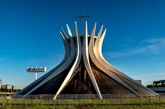
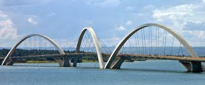

Brasília to futurystyczna stolica Brazylii, zbudowana od zera i otoczona naturą.
Atrakcje w Brasílii


Warto zobaczyć m.in.:
- Katedra Metropolitana Nossa Senhora Aparecida
- Most Juscelino Kubitschek (Ponte JK) nad jeziorem Paranoá
- Praça dos Três Poderes — plac trzech władz
- Memorial JK (pomnik i muzeum prezydenta Kubitscheka)
- Torre de TV z punktem widokowym
Ilu ludzi mieszka w Brasílii?
Około 3 miliony mieszkańców (metropolia) + aglomeracja. (dane orientacyjne)
Chcesz na wakacje?
Z Polski do Brasílii można wybrać się na niezapomnianą podróż. Przykładowe koszty i linie lotnicze znajdziesz poniżej:
Kontakt
Napisz do nas: maxstrona@email.com